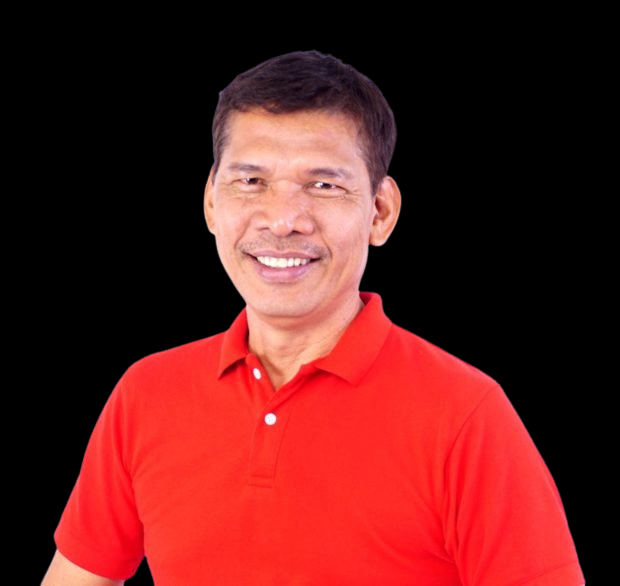

power over aliens (non-Filipinos in the Philippines)
powers of eminent domain, escheat, land reservation and recovery of ill-gotten wealth
power of appointment
power of general supervision over local governments

De Guzman,
Leody
Partido Lakas ng Masa
×
Full name
De Guzman, Leodegario Quitain
Birthdate
July 25, 1959
Birthplace
Naujan, Oriental Mindoro
Secondary
Naujan Academy, Occidental Mindoro
Tertiary
Bachelor of Science in Customs Administration, Philippine Maritime Institute
Labor Leader
Chairperson, Bukluran ng Manggagawang Pilipino
Founding member, Partido Lakas ng Masa
Founding member, Nagkaisa Labor Coalition
Councilor, International Council of the International Center for Labor Solidarity
Garments worker, Aris Philippines
Ranked 38th overall in the 2019 Philippine senatorial elections with 888,458 votes
Bagong Politika, Bagong Ekonomiya
New Politics, New Economy
Ka Leody: “Ang platapormang bitbit namin ni Walden ay ang tanging plataporma ngayong eleksyon na handang komprontahin ang yaman, interes, at kapangyarihan ng mga bilyonaryo, na nagawa pang lumago sa panahon ng pandemya’t resesyon habang milyun-milyong Pilipino ay lugmok sa kahirapan.”
Economic
Re-orient the economy towards domestic needs
Uphold the principle of worker's control
Raise national minimum wage
End job contractualization
Impose price controls on basic commodities
Repeal 2019 Rice Tariffication Law
Impose a "Wealth Tax" on the country's richest 250-300 families
Cancel debt repayments for five years
Recover remaining ill-gotten wealth from the Marcoses
Political
Institute direct democracy
Demilitarize society, uphold human rights, punish mass-murderers and plunderers
Uphold non-majoritarian ethnic communities
Formulate an independent foreign policy
Social Development
Promote universal transformative social protection
Uphold climate justice
Achieve gender equality and strengthen gender rights
From the Jessica Soho Presidential Interviews
ABOLISH PCGG
POGO OPERATIONS
PEACE TALKS WITH CPP-NPA-NDF
MAKE POLITICAL DYNASTY ILLEGAL
PUBLICIZE SALNS
WERE THERE EXTRAJUDICIAL KILLINGS IN WAR ON DRUGS?
LEGALIZE MEDICAL MARIJUANA
LEGALIZE JUETENG
RETURN TO THE ICC
BAN CANDIDATES FACING CHARGES FROM RUNNING IN ELECTION
JOINT PH-CHINA EXPLORATION IN WEST PH SEA
SHOULD ICC PROSECUTE DUTERTE?
SHOULD PRESIDENTS PUBLICIZE THEIR MEDICAL RECORDS?
MANDATORY DRUG TESTING FOR CANDIDATES
DIVORCE
CONTINUE VISITING FORCES AGREEMENT
BAN SUBSTITUTION BY WITHDRAWAL
DEATH PENALTY
LOWER AGE OF CRIMINAL LIABILITY
SAME-SEX MARRIAGE
ALLOW 100% OWNERSHIP OF FOREIGNERS
Bakit Ikaw? the DZRH Presidential Job Interview - Leody de Guzman
Presidential aspirant Leody de Guzman (Facebook photo)
Antonio, J. (2021, October 6). Labor advocate Leody de Guzman files COC for president. ABS-CBN News; ABS-CBN News. https://news.abs-cbn.com/news/10/06/21/labor-advocate-leody-de-guzman-files-coc-for-president
APPLICANT FOR PRESIDENT: Leodigario “Leody” De Guzman | OneNews.PH. (2021). APPLICANT for PRESIDENT: Leodigario “Leody” de Guzman | OneNews.PH. https://www.onenews.ph/articles/applicant-for-president-leodigario-leody-de-guzman
DE GUZMAN, Ka Leody | Eleksyon 2019 | GMA News Online. (2019). GMA News Online. https://www.gmanetwork.com/news/eleksyon2019/candidate/22/leodigariodeguzman/
In first face-off vs other bets, Leody de Guzman brings “alternative” plans. (2022, February 4). RAPPLER. https://www.rappler.com/nation/elections/leody-de-guzman-brings-alternative-plans-kbp-presidential-forum-2022/
Ka Leody-Bello platform: Higher wages, billionaire’s tax, mass murderers behind bars. (2021, October 23). RAPPLER. https://www.rappler.com/nation/elections/ka-leody-de-guzman-walden-bello-tandem-plans-economy-politics-social-development-elections-2022/
Labor leader Leody de Guzman files COC for president. (2021). Cnn. https://cnnphilippines.com/news/2021/10/6/Leody-de-Guzman-COC-president-2022-elections.html?fbclid=IwAR1KClGcpBhpj-zOaGR-AUQDvhwHDBf6mF_57LYAiXB6vEZiaRBRCXtZLyc
upsahalalan. (2019, February 21). De Guzman, Leodigario “Ka Leody” (PARTIDO LAKAS NG MASA). UP Sa Halalan 2022. https://halalan.up.edu.ph/de-guzman-leodigario-ka-leody-partido-lakas-ng-masa/